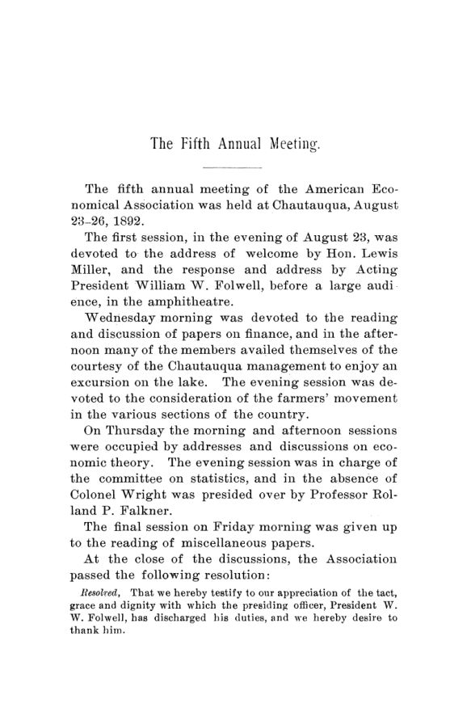

Chautauqua, 1892: a nova economia, o fisco e o agricultor
Leitura: 5 min
Quatro dias em Chautauqua, em agosto de 1892: a economia como ramo da sociologia, um novo cânone tributário, água e ferrovia municipais, a revolta do agricultor e a aritmética de uma pirâmide.


Na noite de 23 de agosto de 1892, no anfiteatro de Chautauqua, à beira de um lago no oeste do estado de Nova York, o anfitrião Lewis H. Miller abriu o encontro com uma experiência própria. Sua empresa adotara a jornada de oito horas por dois anos, com salário integral. A produção não caiu; fizeram-se até mais máquinas com menos homens. O problema veio depois do expediente: em vez de descansar, os operários iam para as fábricas vizinhas trabalhar mais três ou quatro horas.
O quinto encontro anual da American Economic Association durou de 23 a 26 de agosto. O roteiro foi enxuto: finanças públicas na manhã de quarta-feira, passeio no lago à tarde, o movimento dos agricultores à noite; teoria econômica durante toda a quinta-feira, estatística à noite; temas variados na sexta. O relatório saiu em janeiro de 1893, com o discurso de abertura na íntegra, resumos redigidos pelos próprios autores e debates condensados a partir das notas do estenógrafo.
Coube a William W. Folwell, da University of Minnesota, segundo vice-presidente, presidir no lugar dos dois dirigentes ausentes. O Conselho elegeu Charles F. Dunbar presidente e Edward A. Ross secretário, fez de Charles Gide e F. Y. Edgeworth membros honorários e marcou o encontro seguinte para Chicago, perto da reunião do Instituto Internacional de Estatística. Segundo o secretário que saía, Richard T. Ely, o quadro de sócios chegara a 732 em agosto de 1892.
O que Folwell chamava de nova economia?
Folwell começou admitindo a má fama da disciplina: para o cidadão comum, teoria vazia que levanta perguntas e não dá respostas. A culpa, disse, era das leis do comércio ensinadas como se fossem a gravidade, com o laissez-faire como última palavra. Sua proposta mudava o endereço da ciência:
“um ramo e um constituinte da sociologia, a ciência do homem social” (“a branch and constituent of sociology-the science of the social man”)
Daí vinham o método indutivo e, sobretudo, a economia pública: receita, moeda, terras, trabalho. Pelas contas dele, cerca de metade dos trabalhos da associação já tratava desses temas, e o volume confirma: finanças, água e ferrovia municipais, crédito rural, estatística de dívidas.
O que separava o fisco da conta do agricultor?
Os debates de finanças e do campo se cruzaram. Dick queria tirar o imposto da propriedade pessoal para aliviar as fazendas; Weeks duvidava de que o agricultor ganhasse. Ross resumiu a queixa rural: vender a preço de concorrência e comprar, inclusive o frete, a preço de monopólio. Ely, que dizia ter integrado duas comissões tributárias, encerrou o debate fiscal com uma frase seca:
“O perigo não é irmos depressa demais, mas não irmos de modo algum.” (“The danger is not that we shall go too rapidly, but that we shall not go at all.”)
Quanto custava uma promessa de enriquecer sem esforço?
O texto mais devastador veio de um editor, Frank P. Bennett. Sua aritmética das companhias de endowment de Massachusetts mostrou que a conta só fechava com entrada contínua de novos sócios.
Na minha leitura
Na minha leitura, o que este volume tem de melhor é o atrito entre programa e conta. Folwell pede uma economia pública guiada por estatística; no mesmo encontro, Holmes mostra que os registros de hipotecas exagerariam a dívida em 71%, e Dick e Weeks discutem avaliações fiscais que ninguém considera corretas. O cânone de Ross, o imposto que arrecada sem impedir, continua sendo um bom primeiro teste para qualquer tributo, e a pergunta de Farnam, como cobrar progressivamente através de empresas cujos donos ninguém vê, nunca deixou de ser atual.
O debate rural mostra o outro lado: cada orador usou os dados que lhe convinham. Bemis chegou mais perto de um diagnóstico testável ao separar a queda absoluta de riqueza, que não houve, do atraso relativo do campo, que era real.
Glossário
- propriedade pessoal
- bens móveis, créditos, títulos e hipotecas, em oposição aos imóveis (real estate).
- efeito proibitivo
- atividade que deixa de existir por causa de um imposto; custo que não aparece na arrecadação.
- tributação progressiva
- alíquota que sobe com a renda ou a riqueza, em vez de permanecer proporcional.
- teoria da capacidade
- princípio de que cada um deve pagar segundo seus meios, e não segundo o benefício que recebe do Estado.
- sub-treasury
- plano dos agricultores de depositar safras em armazéns públicos e receber em troca papel-moeda de curso legal.
- trabalho marginal
- acréscimo de trabalho a um capital fixo; o produto extra é atribuído só ao trabalho.
- número-índice
- média de preços relativos a um ano-base, simples ou ponderada pelo peso de cada item no consumo.
- endowment de assessment
- promessa de pagar uma quantia fixa após alguns anos, financiada por contribuições cobradas dos sócios conforme a necessidade.
Artigos desta edição
- The New Economics — W. W. Folwell (University of Minnesota), segundo vice-presidente (pp. 19–40). Discurso de abertura. Folwell atribui a má fama da economia ao ensino das leis do comércio como forças externas ao homem e propõe tratá-la como ramo da sociologia, indutiva e centrada nas necessidades e no consumo. Divide a disciplina em economia social e economia pública e cobra atenção à segunda: terra, trabalho, moeda e impostos. Pede um departamento nacional de estatística, aponta a concentração de minas, florestas e águas do Oeste, sugere pôr os sindicatos sob a lei e vê na publicidade o principal controle sobre os monopólios. JSTOR
- The Taxation of Personal Property and the Farmer — S. M. Dick (Missouri Wesleyan College) (pp. 43–48). Com dados dos registros fiscais do Ohio, mostra que a propriedade pessoal escapa ao imposto: em 1889, os imóveis somavam US$ 1,21 bilhão e os bens pessoais, US$ 540,6 milhões. Conclui que os condados agrícolas ganhariam se só os imóveis fossem tributados. No debate, Seligman aponta dupla contagem, já que a hipoteca aparece como bem pessoal sobre um imóvel já contado, e defende a tributação pela capacidade. Joseph D. Weeks duvida de que o agricultor, individualmente, saísse ganhando. JSTOR
- A New Canon of Taxation — E. A. Ross (Cornell University) (pp. 49–52). Ross sustenta que um imposto tem só dois efeitos diretos: arrecadar e impedir. Se o fato tributado rende pouca satisfação líquida, ele desaparece, e esse custo não aparece na receita. A opressão dos impostos antigos viria daí. O efeito proibitivo é legítimo nos impostos de finalidade social, mas ruinoso nos demais. Daí o cânone que acrescenta ao de Adam Smith: imposto de receita deve ter o menor efeito proibitivo possível. Lester F. Ward elogia; Frederick B. Hawley aponta o efeito sobre a acumulação de capital. JSTOR
- The Theory of Progressive Taxation — Edwin R. A. Seligman (Columbia College) (pp. 52–55). Recusa a teoria socialista de Wagner, segundo a qual o Estado deveria corrigir desigualdades de fortuna, e acha inútil como critério a teoria compensatória de Walker. A disputa real é entre benefício e capacidade. Escritores holandeses teriam mostrado que o sacrifício igual não fixa nenhuma alíquota; ainda assim, a progressão seria menos injusta que a proporção. Na prática, recomenda cautela. No debate, Farnam lembra que tributar via empresas impede medir a riqueza de cada dono, e Ely diz que o risco americano é a inércia. JSTOR
- The Municipal Ownership of Water Works — M. N. Baker (pp. 55–58). Escolhe a água porque é o único monopólio natural em que a propriedade municipal é comum: no fim de 1890, 806 das 1.878 empresas de água do país, ou 43%, pertenciam a cidades. A tendência era de municipalização: até 1890, 66 sistemas haviam passado do privado ao público e só 15 no sentido inverso. As tarifas de 430 empresas eram 43% mais altas que as de 318 cidades, em parte porque cidades cobriam déficits com impostos. Conclui que a gestão pública é tão eficiente quanto a privada. JSTOR
- The Cincinnati Southern Railway: A Study in Municipal Activity — J. H. Hollander (Johns Hopkins University) (pp. 58–61). Narra como a cidade de Cincinnati construiu, por conta própria, uma ferrovia de 335 milhas até Chattanooga, ao custo de mais de US$ 18 milhões e dez anos de trabalho. A obra foi conduzida por cinco curadores nomeados pela Justiça, elogiados pela integridade. Aberta em 1880, a linha foi arrendada no ano seguinte por 25 anos, a um aluguel médio de US$ 1,08 milhão por ano, mas títulos longos e caros sem resgate antecipado impediam que gerasse receita. No debate, Gray duvida de que só a cidade pudesse fazê-la. JSTOR
- The Movement in the Northern States — S. C. Walker (Massachusetts Agricultural College) (pp. 62–74). Atribui a situação do agricultor a uma oferta que cresceu além da demanda, com custos de insumos e ferramentas que comprimem a margem. Vê o movimento como despertar irreversível, em quatro frentes: organização, educação, cooperação e ação política. O debate é longo. Ross diz que o agricultor vende em concorrência e compra a preços de monopólio; Weeks defende os fretes ferroviários; Ely calcula a hipoteca contra o lucro agrícola; Commons elogia o plano do sub-treasury; Giddings culpa a mentalidade do próprio agricultor. JSTOR
- The Discontent of the Farmers — Edward W. Bemis (University of Chicago) (pp. 74–76). Bemis vê nos agricultores do Oeste e do Sul o grupo mais radical do país e aponta como causa principal a queda de mais de 22% nos preços desde 1873, que dificultou pagar as hipotecas. Estas valiam de 5% a 30% das terras de cada estado, mas o arrendamento crescera mais de 50% em vários estados desde 1880. O núcleo da queixa é o atraso relativo frente às cidades. Recusa o sub-treasury, propõe crédito cooperativo ao modo Raiffeisen e impostos sobre herança e renda para financiar estradas e escolas rurais. JSTOR
- The Interpretation of Ricardo — Simon N. Patten (University of Pennsylvania) (pp. 77–82). Patten propõe ler Ricardo como autor de uma teoria da prosperidade, não da distribuição. Smith e Malthus contrapunham renda da terra e salários numa economia agrícola; Ricardo contrapôs lucros e salários numa economia industrial e perguntou por que os lucros eram baixos. A resposta foi o preço alto dos alimentos, ligado à tarifa. A teoria da renda de Malthus, de 1815, entrou como prova melhor de uma tese já pronta. Taussig concorda em parte, mas vê o mérito de Ricardo em dar coerência à distribuição. JSTOR
- "The Ultimate Standard of Value" — J. B. Clark (Smith College) (pp. 82–87). Clark busca um padrão absoluto de medida do valor e o encontra no trabalho social. Enumera quatro obstáculos ao uso do trabalho como unidade e resolve cada um: toma o trabalho marginal, uma amostra de todos os graus de eficiência, o sacrifício em vez dos atos e, por fim, o sacrifício imposto à sociedade pela última e mais penosa parte da jornada. No debate sobre monopólios, explica a tarifa de bonde de cinco centavos pelo esforço de quem teria de voltar para casa a pé; Patten prefere medir pelo prazer. JSTOR
- The Idea and Definition of Value — Franklin H. Giddings (Bryn Mawr College) (pp. 87–95). Giddings conta cinco grupos e doze espécies de definição de valor desde Locke e critica a que identifica valor subjetivo com utilidade subjetiva. Para ele, valoriza-se por um juízo sobre um sentimento futuro, e por isso os valores de mercado variam com a inteligência e o padrão de vida dos grupos. Quem prevê a demanda futura obtém valores de monopólio. Ely rebate com um caso: uma companhia de bondes de Baltimore rendia 17% sobre o capital investido, com péssimo serviço e nenhuma ideia brilhante por trás. JSTOR
- Value and Distribution as Treated by Professor Marshall — F. W. Taussig (Harvard University) (pp. 95–101). Taussig examina os Principles of Economics de Marshall, cuja maior inovação seria tratar valor e distribuição como um só problema. Marshall enfatiza as semelhanças de longo prazo e as diferenças imediatas; Taussig inverteria a ênfase. Critica a teoria residual dos salários em geral e limita a lei da substituição aos períodos de transição, quando dois métodos convivem. Duvida de que o livro alcance a autoridade que teve John Stuart Mill. Folwell diz ter se decepcionado; Giddings acha que não se foi muito além de Cairnes. JSTOR
- Diminishing Returns and Distribution — J. R. Commons (University of Indiana) (pp. 101–103). Commons propõe tornar universal a lei dos rendimentos decrescentes, olhando sempre a partir da área ocupada, na indústria como na agricultura. O solo seria capital e seguiria a lei do juro; a lei da renda valeria apenas para área e localização e, por extensão, para outras oportunidades sociais e privilégios de monopólio, como franquias, patentes e marcas. Uma tabela classifica os fatores da distribuição. Ely acrescenta que o censo pode registrar como riqueza o que é só transferência do público para o dono de um privilégio. JSTOR
- Statistics of Private Indebtedness — George Kirby Holmes (Census Office) (pp. 105–108). Descreve como o Censo mediu a dívida hipotecária. Os registros de cartório exagerariam a dívida real em 71%, e a entrevista direta seria cara e arriscada. O método escolhido foi indireto: resumir todas as hipotecas da década, calcular a vida média da dívida e descontar pagamentos parciais apurados em 102 condados, onde também se fez a conferência direta. O erro médio nos condados tabulados foi de 0,98%. A pesquisa de propriedade e dívida de fazendas e casas combinou recenseadores, correio e agentes especiais. JSTOR
- The Measurement of Price Movements — Roland P. Falkner (University of Pennsylvania) (pp. 108–113). Falkner relata a análise que conduziu de dados do Department of Labor sobre preços desde 1840 e o efeito da tarifa sobre preços e salários. Explica as escolhas: preços no atacado no lugar do varejo, ano-base de 1860 por ter sido normal e uma ponderação pelo orçamento dos consumidores, com alimentos pesando 41%. Taussig observa que a média simples dá quase o mesmo; Falkner confirma, 99,52 contra 99,56, mas adverte que a coincidência pode não se manter com listas maiores. JSTOR
- The Endowment Craze in Massachusetts — Frank P. Bennett (publisher, American Wool and Cotton Reporter) (pp. 114–121). Ataca as companhias de endowment autorizadas por lei de Massachusetts de 1888. Das 56 criadas, 32 já tinham quebrado. A pioneira, a Order of the Iron Hall, de Indiana, prometia mil dólares em sete anos a um custo de cerca de 300 por beneficiário. Bennett mostra que a conta exigiria uma população crescente sem limite: para pagar seus 65.204 sócios, seriam precisos 2.608.160 novos. No debate, Walker culpa o desejo de ganhar algo por nada; Commons lembra a instabilidade que leva os pobres a buscar seguro. JSTOR
- Architectural Problems in Great Cities — Barr Ferree (Engineering Magazine, Nova York) (pp. 121–123). Ferree desloca o problema da arquitetura urbana dos monumentos para casas, escritórios e fábricas: dois terços da população de Nova York viviam em cortiços. O arquiteto é instrumento do cliente, e o construtor trata o prédio como investimento. O arranha-céu seria, assim, o produto legítimo de métodos comerciais aplicados à arquitetura, e a obra deve ser julgada pelas condições econômicas que a produzem. JSTOR
- The Fifth Annual Meeting — Relatório do encontro (pp. 9–11). Chautauqua, 23 a 26 de agosto de 1892; Charles F. Dunbar eleito presidente; próximo encontro marcado para Chicago. JSTOR
- Address of Welcome — Lewis H. Miller (pp. 15–16). Saudação do anfitrião, com o relato de sua experiência com a jornada de oito horas. JSTOR
- Statistical Work of the Year — Roland P. Falkner (University of Pennsylvania) (pp. 104–105). Na ausência de Carroll D. Wright, destaca o trabalho dele sobre custo de produção e orçamentos operários. JSTOR
- Report of the Secretary — Richard T. Ely (pp. 127–129). Sócios passam de 638 a 732; nova South Western Branch; pede reuniões anuais e unidade de administração. JSTOR
- Report of the Treasurer — Relatório do tesoureiro (pp. 130). Demonstrativo financeiro da associação. JSTOR
Fontes
- The Fifth Annual Meeting (pp. 9–11). JSTOR · Internet Archive (PDF)
- Address of Welcome (pp. 15–16). JSTOR · Internet Archive (PDF)
- The New Economics (pp. 19–40). JSTOR · Internet Archive (PDF)
- The Taxation of Personal Property and the Farmer (pp. 43–48). JSTOR · Internet Archive (PDF)
- A New Canon of Taxation (pp. 49–52). JSTOR · Internet Archive (PDF)
- The Theory of Progressive Taxation (pp. 52–55). JSTOR · Internet Archive (PDF)
- The Municipal Ownership of Water Works (pp. 55–58). JSTOR · Internet Archive (PDF)
- The Cincinnati Southern Railway: A Study in Municipal Activity (pp. 58–61). JSTOR · Internet Archive (PDF)
- The Movement in the Northern States (pp. 62–74). JSTOR · Internet Archive (PDF)
- The Discontent of the Farmers (pp. 74–76). JSTOR · Internet Archive (PDF)
- The Interpretation of Ricardo (pp. 77–82). JSTOR · Internet Archive (PDF)
- "The Ultimate Standard of Value" (pp. 82–87). JSTOR · Internet Archive (PDF)
- The Idea and Definition of Value (pp. 87–95). JSTOR · Internet Archive (PDF)
- Value and Distribution as Treated by Professor Marshall (pp. 95–101). JSTOR · Internet Archive (PDF)
- Diminishing Returns and Distribution (pp. 101–103). JSTOR · Internet Archive (PDF)
- Statistical Work of the Year (pp. 104–105). JSTOR · Internet Archive (PDF)
- Statistics of Private Indebtedness (pp. 105–108). JSTOR · Internet Archive (PDF)
- The Measurement of Price Movements (pp. 108–113). JSTOR · Internet Archive (PDF)
- The Endowment Craze in Massachusetts (pp. 114–121). JSTOR · Internet Archive (PDF)
- Architectural Problems in Great Cities (pp. 121–123). JSTOR · Internet Archive (PDF)
- Report of the Secretary (pp. 127–129). JSTOR · Internet Archive (PDF)
- Report of the Treasurer (pp. 130). JSTOR · Internet Archive (PDF)
- Sumário da edição no JSTOR: Publications of the American Economic Association, vol. 8, nº 1.
Documento em domínio público (EUA, publicado antes de 1931), via JSTOR Early Journal Content e Internet Archive. Resumo e comentário do autor deste site, sem afiliação com a American Economic Association. Encontrou um erro? Escreva: a correção é publicada no próprio texto, com data.
← Nº 35 · Haynes, 1892: o acordo com o Canadá que a política derrubou Nº 37 · Reynolds, 1893: por que o pobre pagava caro para morar mal →